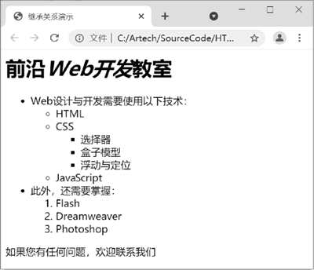
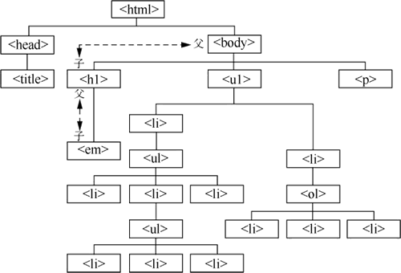
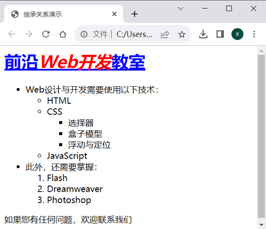
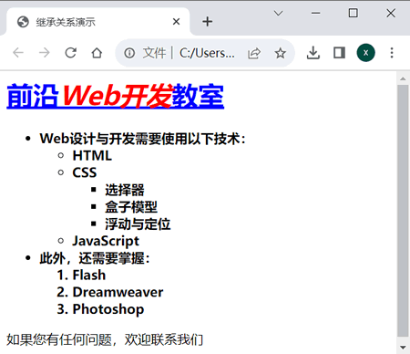
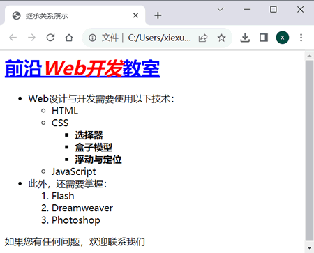

首页 > 编程笔记
CSS继承特性详解
学习过面向对象编程的读者对继承（inheritance）的概念一定不会陌生。CSS 中的继承并不像 C++ 和 Java 等语言中那么复杂，简单来说就是将各个 HTML 标记看作一个个容器，其中被包含的小容器会继承包含它的大容器的风格样式。
本节将从页面各个标记的父子关系出发，详细讲解 CSS 的继承。
可以看到在这个页面中，标题的中间部分的文字使用了<em>（强调）标记，在浏览器中显示为斜体。后面使用了列表结构，其中最“深”的部分使用了三级列表。
这里着重从“继承”的角度来介绍各个标记之间的树形关系，如下图所示。
在这个树形关系中，处于最上端的 <html> 标记被称为“根（root）”，它是所有标记的源头，往下层层包含。在每一个分支中，上层标记均被称为下层标记的“父”标记；相应地，下层标记被称为上层标记的“子”标记。例如 <h1> 标记是 <body> 标记的子标记，同时它也是 <em> 标记的父标记。
CSS 继承指的是子标记会继承父标记的所有样式风格，并可以在父标记样式风格的基础上加以修改，产生新的样式，而子标记的样式风格则完全不会影响父标记。
例如在上面的实例中加入如下 CSS 代码，将 <h1> 标记设置为蓝色，加上下画线，并将 <em> 标记设置为红色。
效果如下图所示。
可以看到子标记 <em> 也显示出了下画线，说明对父标记的设置也对子标记产生了效果。<em> 标记中的文字显示为红色，<h1> 标记中的其他文字仍为蓝色，说明对子标记的设置不会对其父标记产生作用。
CSS 的继承贯穿某个 CSS 设计，每个标记都遵循 CSS 继承的概念。可以利用这种巧妙的继承关系，大大缩减代码的编写量，并且提高可读性，尤其是在页面内容很多且关系复杂的情况下。
例如要将嵌套最深的第 3 级列表的文字显示为粗体，可以增加如下样式设置：
可以看到并不是第 3 级列表文字显示为粗体，而是所有列表项目的文字都变成了粗体。如果只想使“CSS”下的最深的 3 个项目显示为粗体，其他项目仍显示为正常粗细，则该如何设置呢？
一种方法是设置单独的类别，例如定义一个 .bold 类别，然后给该类别赋予需要变为粗体的项目，但是这样设置会显然很麻烦。
我们可以利用继承的特性，使用前面介绍的后代选择器，这样不需要设置新的类别，即可完成同样的任务。
可以看到只有第 3 层的项目列表是粗体显示的。实际上，对上面的选择器还可以进行简化，如将其简化为下面这段代码，效果也是完全相同的。
本节将从页面各个标记的父子关系出发，详细讲解 CSS 的继承。
CSS继承关系
所有的 CSS 语句都是基于各个标记之间的继承关系的。为了使读者更好地理解继承关系，下面先从 HTML 文件的组织结构入手进行介绍，代码如下：
<html>
<head>
<title>继承关系演示</title>
</head>
<body>
<h1>前沿<em>Web开发</em>教室</h1>
<ul>
<li>Web设计与开发需要使用以下技术：
<ul>
<li>HTML</li>
<li>CSS
<ul>
<li>选择器</li>
<li>盒子模型</li>
<li>浮动与定位</li>
</ul>
</li>
<li>JavaScript</li>
</ul>
</li>
<li>此外，还需要掌握：
<ol>
<li>Flash</li>
<li>Dreamweaver</li>
<li>Photoshop</li>
</ol>
</li>
</ul>
<p>如果您有任何问题，欢迎联系我们</p>
</body>
</html>
效果如下图所示。

图 1 包含多层列表的页面
图 1 包含多层列表的页面
可以看到在这个页面中，标题的中间部分的文字使用了<em>（强调）标记，在浏览器中显示为斜体。后面使用了列表结构，其中最“深”的部分使用了三级列表。
这里着重从“继承”的角度来介绍各个标记之间的树形关系，如下图所示。

图 2 继承关系树形图
图 2 继承关系树形图
在这个树形关系中，处于最上端的 <html> 标记被称为“根（root）”，它是所有标记的源头，往下层层包含。在每一个分支中，上层标记均被称为下层标记的“父”标记；相应地，下层标记被称为上层标记的“子”标记。例如 <h1> 标记是 <body> 标记的子标记，同时它也是 <em> 标记的父标记。
CSS继承的运用
通过前面的讲解，我们已经对各个标记间的父子关系有了一定的认识，下面进一步讲解 CSS 继承的运用。CSS 继承指的是子标记会继承父标记的所有样式风格，并可以在父标记样式风格的基础上加以修改，产生新的样式，而子标记的样式风格则完全不会影响父标记。
例如在上面的实例中加入如下 CSS 代码，将 <h1> 标记设置为蓝色，加上下画线，并将 <em> 标记设置为红色。
效果如下图所示。

图 3 父子关系效果
图 3 父子关系效果
可以看到子标记 <em> 也显示出了下画线，说明对父标记的设置也对子标记产生了效果。<em> 标记中的文字显示为红色，<h1> 标记中的其他文字仍为蓝色，说明对子标记的设置不会对其父标记产生作用。
CSS 的继承贯穿某个 CSS 设计，每个标记都遵循 CSS 继承的概念。可以利用这种巧妙的继承关系，大大缩减代码的编写量，并且提高可读性，尤其是在页面内容很多且关系复杂的情况下。
例如要将嵌套最深的第 3 级列表的文字显示为粗体，可以增加如下样式设置：
li{
font-weight:bold;
}
效果如下图所示：

图 4 各级列表均变成粗体
图 4 各级列表均变成粗体
可以看到并不是第 3 级列表文字显示为粗体，而是所有列表项目的文字都变成了粗体。如果只想使“CSS”下的最深的 3 个项目显示为粗体，其他项目仍显示为正常粗细，则该如何设置呢？
一种方法是设置单独的类别，例如定义一个 .bold 类别，然后给该类别赋予需要变为粗体的项目，但是这样设置会显然很麻烦。
我们可以利用继承的特性，使用前面介绍的后代选择器，这样不需要设置新的类别，即可完成同样的任务。
li ul li ul li{
font-weight:bold;
}
效果如下图所示。

图 5 仅加粗3个项目列表
图 5 仅加粗3个项目列表
可以看到只有第 3 层的项目列表是粗体显示的。实际上，对上面的选择器还可以进行简化，如将其简化为下面这段代码，效果也是完全相同的。
li li li{
font-weight:bold;
}
注意，并不是所有的属性都会自动传给子元素，有的属性不会继承父元素的属性值。例如针对上面列举的文字颜色 color 属性，子对象会继承父对象的文字颜色属性，但是如果给某个元素设置了一个边框，它的子元素不会自动也加上一个边框，因为边框属性是非继承的。关注公众号「站长严长生」，在手机上阅读所有教程，随时随地都能学习。内含一款搜索神器，免费下载全网书籍和视频。

微信扫码关注公众号